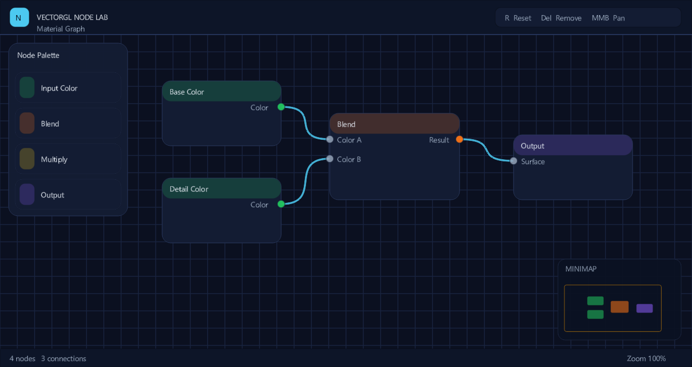
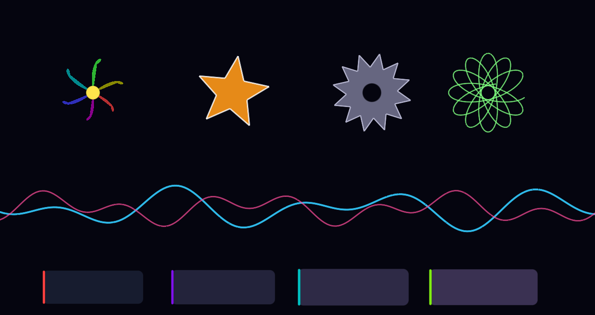
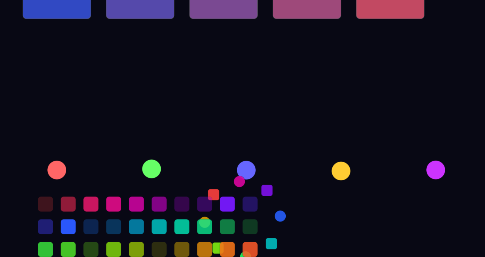
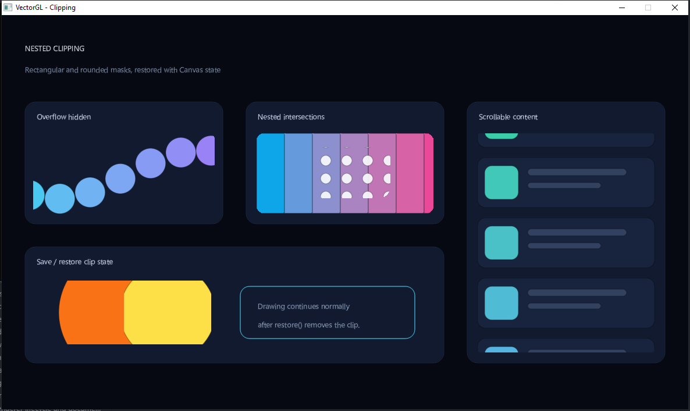

The examples are the proof.
Captures from C++ programs shipped in the repository. These are native application screenshots, not interactive browser demos.

UI editor workspace
A searchable toolbox, separate Scene artboard, inspector, hierarchy and tag browser. Resizable panels, typed drag/drop and native dialog hooks.
vectorgl_ui_editor_workspaceSource ↗

Graphics showcase
SDF primitives, Bézier paths, colors, text and animated visuals in one composition.
vectorgl_showcaseSource ↗

Node editor
Draggable nodes, connected ports, pan, zoom, selection and a minimap.
vectorgl_node_editorSource ↗

Path laboratory
Curves, stars, waves, filled contours, strokes and animated path geometry.
vectorgl_pathsSource ↗

Animation showcase
Tweens, springs, keyframes, looping and easing in a native render loop.
vectorgl_animationSource ↗

Nested clipping
Nested rectangular and rounded masks with transforms, scrolling and scoped drawing state.
vectorgl_clippingSource ↗
Take an example apart.
The workspace profile enables UI examples. Use full to enable all graphics examples, Flow Studio and GPU tests.
cmake --preset full
cmake --build --preset full
ctest --preset full
For Visual Studio, executables are under
build/full/example/Debug. With Ninja they are under
build/full/example. GPU tests need a suitable
driver/display; Linux CI uses Mesa and Xvfb.